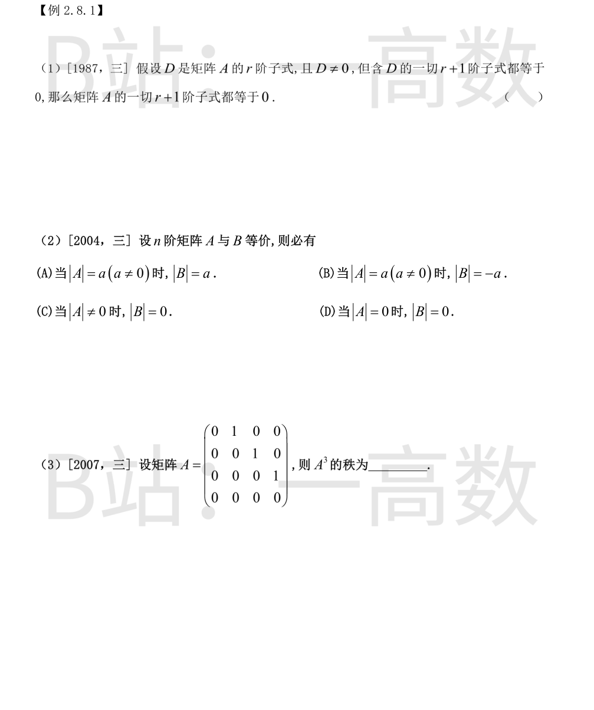
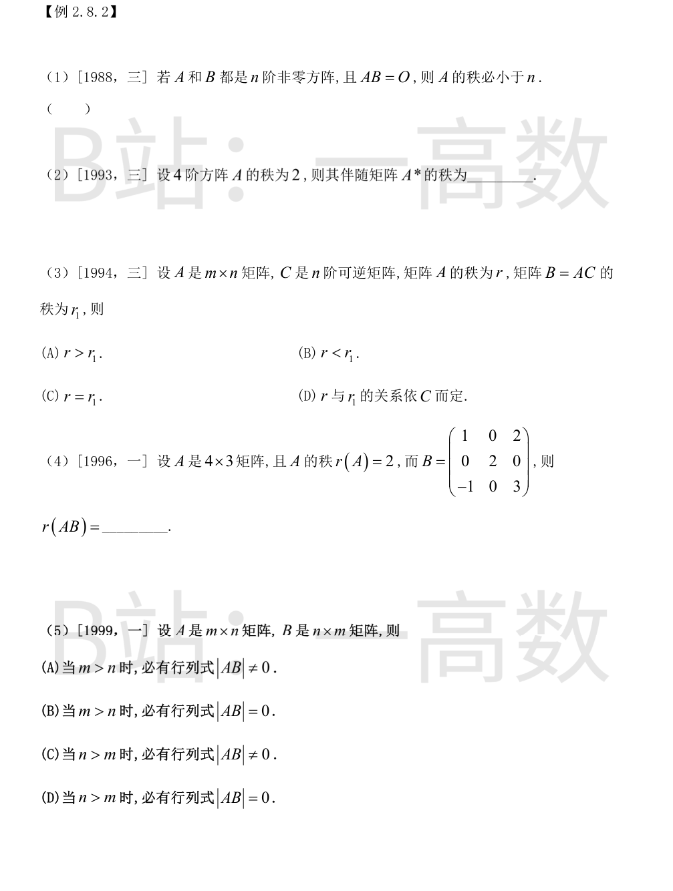
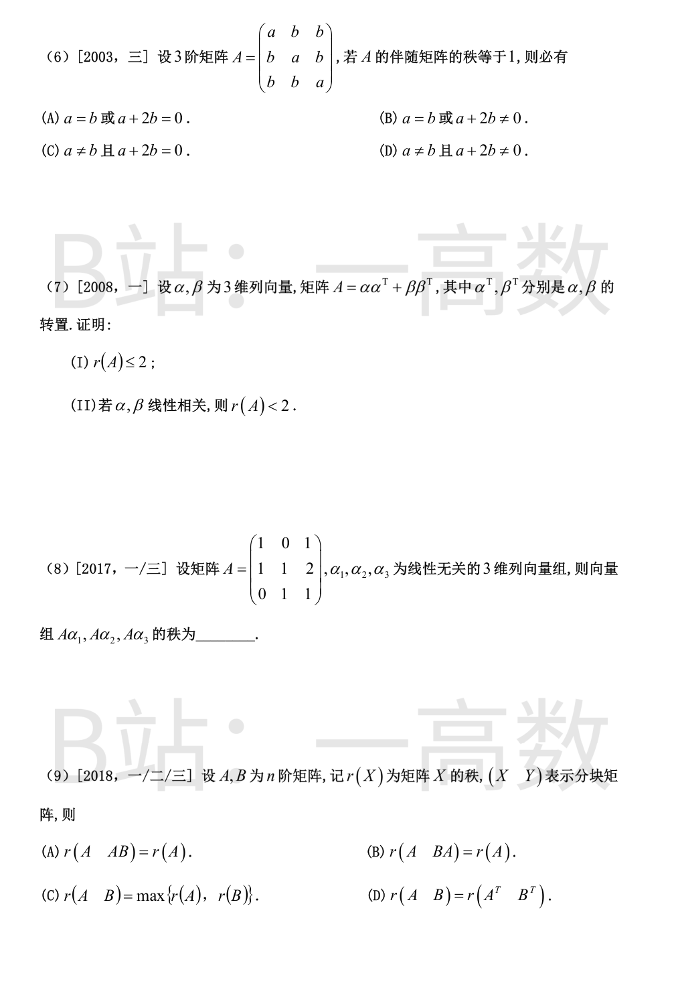
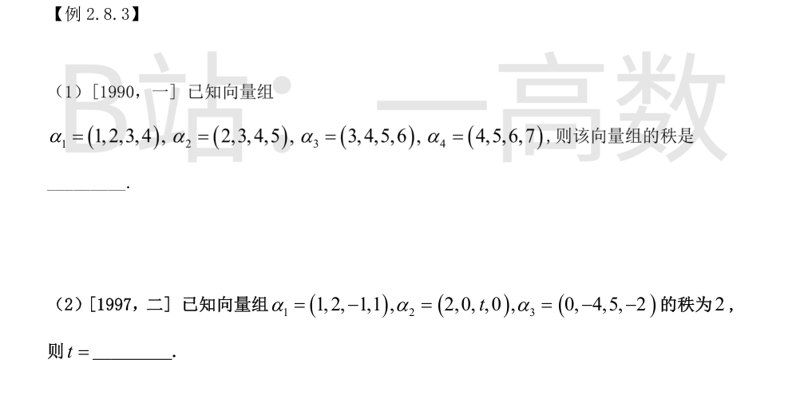
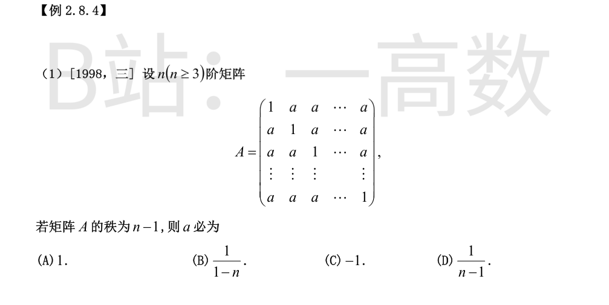
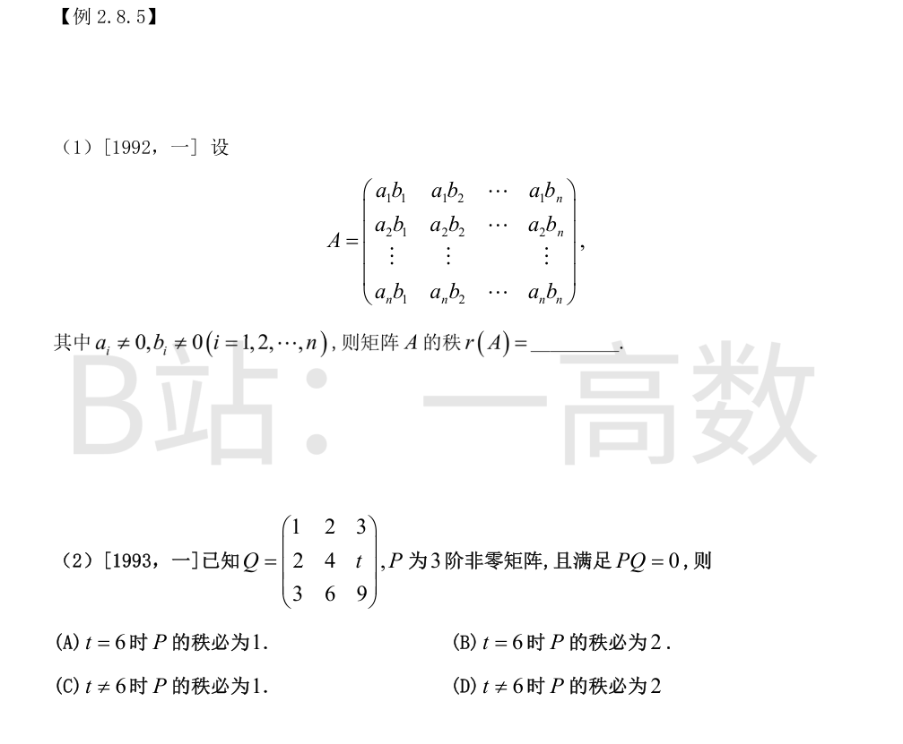

结论正确。设 D 位于行组 I、列组 J (|I|=|J|=r)。因 |D|≠0, 对任意列 q 与任意行 p∉I, 含 D 的加边子式 (行 I∪{p}, 列 J∪{q}) 为零, 这说明列 q 限制在行组 I∪{p} 上可由 D 的 r 个列 (限制在同一行组) 唯一线性表出, 且表出系数由前 r 行决定、与 p 无关, 因而第 r+1 个方程成立时恰给出
$$a_{pq}=\sum_{k=1}^{r}c_k\,a_{pj_k},\qquad c=D^{-1}A[I,q]\ \text{与 } p\ \text{无关};$$
当 p∈I 时, 按 D 可逆解出的正是同一组系数 c, 该关系也成立。于是 A 的每一列都是第 j₁,…,j_r 列的线性组合 (系数对全列统一), 从而任意 r+1 个列向量线性相关, A 的一切 r+1 阶子式全为零。证毕。
同阶方阵等价 ⟺ 秩相等。$r(A)=r(B)$, 而 $|A|=0\iff r(A)<n\iff r(B)<n\iff|B|=0$, 故 (D) 正确; (A)(B) 中 $|B|\ne0$ 但其值与符号均不能确定; (C) 与同秩矛盾。
A 为移位矩阵 (4 阶幂零 Jordan 块), 每乘一次非零带右移一位:
$$A^2=\begin{pmatrix}0&0&1&0\\0&0&0&1\\0&0&0&0\\0&0&0&0\end{pmatrix},\qquad
A^3=\begin{pmatrix}0&0&0&1\\0&0&0&0\\0&0&0&0\\0&0&0&0\end{pmatrix},$$
非零行仅 1 行, 故 $r(A^3)=1$。


正确。反证: 若 $r(A)=n$, 则 A 可逆, $B=A^{-1}(AB)=A^{-1}O=O$, 与 B≠0 矛盾。故 $r(A)<n$。
n=4, $r(A)=2\le n-2$。此时 A 的一切 3 阶子式全为零, 而 $A^*$ 的每个元素都是 A 的某个 3 阶代数子式, 故 $A^*=O$, 即
$$r(A^*)=0.$$
(一般公式: $r(A^*)=n$ 当 $r(A)=n$; $=1$ 当 $r(A)=n-1$; $=0$ 当 $r(A)\le n-2$。)
可逆矩阵乘在右边不改变秩: $B=AC$, C 可逆, 则 $r(B)=r(AC)=r(A)$, 即 $r_1=r$, 选 (C)。
(用秩不等式证: $r(AC)\le r(A)$; 又 $A=(AC)C^{-1}\Rightarrow r(A)\le r(AC)$。)
$$|B|=\begin{vmatrix}1&0&2\\0&2&0\\-1&0&3\end{vmatrix}=2\begin{vmatrix}1&2\\-1&3\end{vmatrix}=2\,(3+2)=10\ne0,$$
B 可逆, 乘可逆矩阵不改变秩, 故 $r(AB)=r(A)=2$。
$AB$ 为 $m$ 阶方阵, $r(AB)\le\min\{r(A),r(B)\}\le\min\{m,n\}=n$。当 $m>n$ 时 $r(AB)\le n<m$, $AB$ 不满秩, $|AB|=0$, (B) 正确。
$n>m$ 时不能断定: 例如 $A=(1,\,0)$, $B=(1,\,0)^T$ 时 $AB=(1)$, $|AB|=1\ne0$; 换 B 也可使之为零, 故 (C)(D) 皆错。
$r(A^*)=1\iff r(A)=3-1=2\iff |A|=0$ 且 $r(A)\ge2$。A 的特征值为 $a+2b$ 与 $a-b$ (二重):
$$|A|=(a+2b)(a-b)^2=0\ \Rightarrow\ a=b\ \text{或}\ a=-2b.$$
若 $a=b$: A 为全同元素矩阵, $r(A)\le1$, 舍去。故 $a=-2b$, 且 $r(A)=2$ 要求 $b\ne0$ 即 $a\ne b$。
所以 $a\ne b$ 且 $a+2b=0$, 选 (C)。
(I) 分块表示:
$$A=\alpha\alpha^T+\beta\beta^T=(\alpha,\ \beta)\begin{pmatrix}\alpha^T\\\beta^T\end{pmatrix},$$
由秩不等式 $r(XY)\le\min\{r(X),r(Y)\}$:
$$r(A)\le r(\alpha,\beta)\le\min\{3,2\}=2.$$
(II) $\alpha,\beta$ 线性相关: 若 $\alpha=0$, 则 $A=O$, $r(A)=0<2$; 否则不妨设 $\beta=k\alpha$, 于是
$$A=\alpha\alpha^T+k^2\alpha\alpha^T=(1+k^2)\,\alpha\alpha^T,$$
为秩 1 矩阵 (或零), $r(A)\le1<2$。证毕。
设 $P=(\alpha_1,\alpha_2,\alpha_3)$, 由线性无关知 P 可逆, 且
$$(A\alpha_1,A\alpha_2,A\alpha_3)=AP,\qquad r(AP)=r(A).$$
求 $r(A)$:
$$|A|=\begin{vmatrix}1&0&1\\1&1&2\\0&1&1\end{vmatrix}=1\cdot(1-2)-0+1\cdot(1-0)=-1+1=0,$$
又第 1、3 行 $(1,0,1),(0,1,1)$ 线性无关, 故 $r(A)=2$。所求秩为 2。
(A): $(A,\ AB)=A\,(E,\ B)$, 故 $r(A,AB)\le r(A)$; 又 $(A,AB)$ 含有 A 的全部列, $r(A,AB)\ge r(A)$。故 $r(A,AB)=r(A)$, (A) 正确。
(B) 反例: $A=\begin{pmatrix}1&0\\0&0\end{pmatrix}$, $B=\begin{pmatrix}0&0\\1&0\end{pmatrix}$, 则 $(A,BA)=\begin{pmatrix}1&0&0&0\\0&0&1&0\end{pmatrix}$ 秩为 $2\ne1=r(A)$。
(C) 反例: $A=\begin{pmatrix}1&0\\0&0\end{pmatrix}$, $B=\begin{pmatrix}0&0\\0&1\end{pmatrix}$, $r(A,B)=2>\max\{1,1\}$。
(D) 反例: $A=(1,\ 0)$, $B=(0,\ 1)$ (1×2), $r(A,B)=1$, 而 $r(A^T,B^T)=r\begin{pmatrix}1&0\\0&1\end{pmatrix}=2$, 不等。
故选 (A)。

相邻向量作差: $\alpha_2-\alpha_1=\alpha_3-\alpha_2=\alpha_4-\alpha_3=(1,1,1,1)=d$, 即
$$\alpha_2=\alpha_1+d,\quad \alpha_3=\alpha_1+2d,\quad \alpha_4=\alpha_1+3d,$$
向量组可由 $\alpha_1,d$ 线性表示; 而 $\alpha_1=(1,2,3,4)$ 与 $d=(1,1,1,1)$ 分量不成比例, 线性无关。故秩为 2。
秩为 2 ⟺ $\alpha_1,\alpha_2$ 线性无关 (显然, 分量不成比例) 且 $\alpha_3$ 可由 $\alpha_1,\alpha_2$ 线性表示。设 $\alpha_3=x\alpha_1+y\alpha_2$:
第 2 分量: $2x=-4\Rightarrow x=-2$; 第 1 分量: $x+2y=0\Rightarrow y=1$; 第 4 分量: $x=-2$ ✓;
第 3 分量: $-x+ty=5\Rightarrow 2+t=5\Rightarrow t=3$。
验证: $-2\alpha_1+\alpha_2=(0,-4,5,-2)=\alpha_3$。故 $t=3$。

A 的特征值: $1+(n-1)a$ (对应特征向量 $(1,1,\dots,1)^T$) 与 $1-a$ ($n-1$ 重), 故
$$|A|=\bigl(1+(n-1)a\bigr)(1-a)^{n-1}.$$
$r(A)=n-1\Rightarrow|A|=0\Rightarrow a=1$ 或 $a=\dfrac{1}{1-n}$。
$a=1$: A 为全 1 矩阵, 秩为 $1<n-1$ (因 $n\ge3$), 舍去;
$a=\dfrac{1}{1-n}$: $1-a=\dfrac{n}{n-1}\ne0$ (n−1 重), 恰有一个零特征值, $r(A)=n-1$ ✓。
选 (B)。

$$A=\begin{pmatrix}a_1\\a_2\\\vdots\\a_n\end{pmatrix}(b_1,\ b_2,\ \dots,\ b_n),$$
即列向量全是 $(a_1,\dots,a_n)^T$ 的倍数; 又 $a_i\ne0,b_j\ne0$ 保证 $A\ne O$, 故 $r(A)=1$。
$PQ=O$, $P\ne O$: 由秩不等式 $r(P)+r(Q)\le3$, 且 $r(P)\ge1$。
t=6: Q 的三行 $(1,2,3),(2,4,6),(3,6,9)$ 成比例, $r(Q)=1$, 故 $1\le r(P)\le2$, 不能确定, (A)(B) 错;
t≠6: $(1,2,3)$ 与 $(2,4,t)$ 不成比例, $r(Q)=2$, 故 $1\le r(P)\le1$, 即 $r(P)=1$ 必成立, (C) 正确, (D) 错。